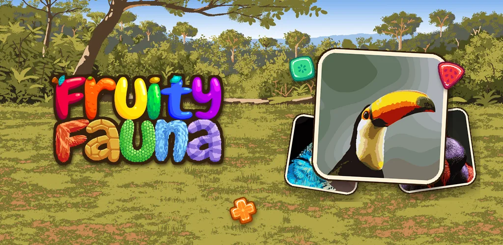

Press kit
Wyli
Factsheet
- Developer
- Wyli (solo developer)
- Based in
- Philippines
- Founded
- 2024
- Website
- wyliolivete.github.io
- Press contact
- official.wyliolivete@gmail.com
- Social
- Instagram @official.wyliolivete · TikTok @fruityfauna · Facebook
Games

Fruity Fauna
A tap-to-match fruit puzzle game starring 36 real animals. iOS and Android, 2024. Big update 1 December 2026.
About
Wyli is a game developer with more than 12 years of experience making games, from casual mobile idle games to soulslike RPGs and tactical card games. Wyli works alone and handles every part of each game, from code and art to design and sound, with one goal: fun, engaging games that remind players why they fell in love with games in the first place.
Wyli holds a Bachelor's degree in Computer Science (magna cum laude) and composes music.
Logos
 Avatar 1 (PNG)
Avatar 1 (PNG)

Contact
official.wyliolivete@gmail.com · Player support: service.wyliolivete@gmail.com